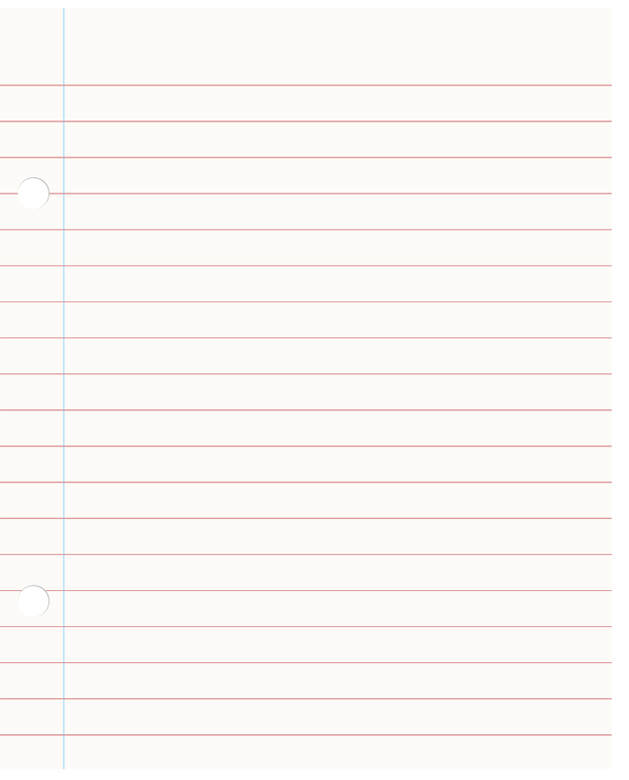
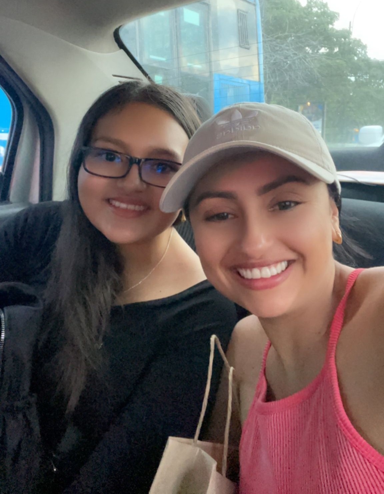
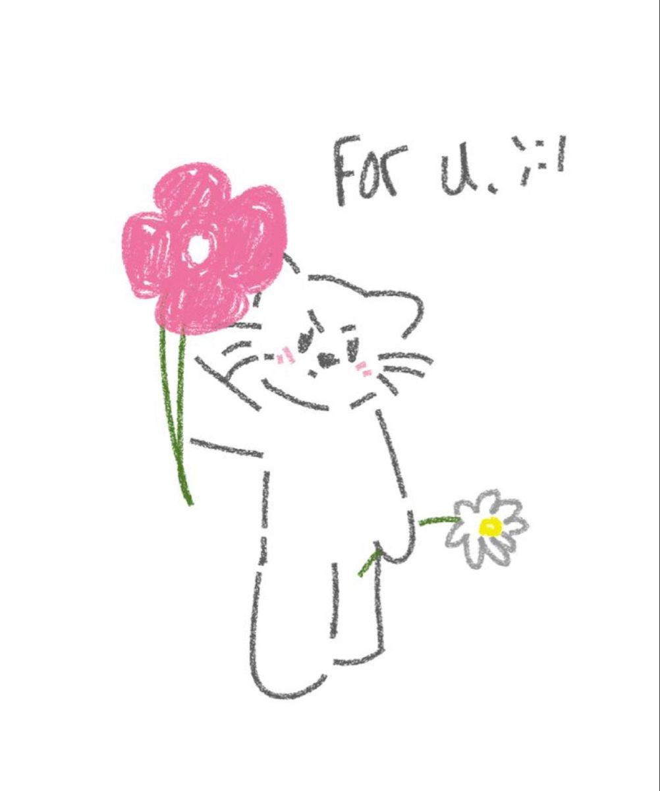

🌹 Lo que más admiro de ti 🌹

Tía Jhoana, hoy quería tomarme un momento para decirte algo que de pronto nunca te he dicho, pero que siento con el corazón: te admiro muchísimo.
Todo lo que haces día a día y me llena de orgullo tenerte en mi vida. Es increíble la forma en que te preocupas y cuidas de mis abuelos, de mi mamá, de mi hermano y de mí, y también del resto de la familia, nos cuidas con un amor incondicional que va más allá de cualquier responsabilidad. Eres una guerrera en todo el sentido de la palabra. Llegar a un país donde no tenías a nadie y salir adelante como lo has conseguido exige una valentía gigante, que solo alguien con tu determinación podría conseguir.
Admiro tu capacidad para trabajar, la mamá ejemplar que eres para mi primo, y esa sensibilidad y cariño tan bonito que tienes con los animales. Eres una mujer increíble, un ejemplo constante de amor, fuerza y generosidad. Gracias por estar siempre y por ser exactamente como eres. Te quiero mucho

